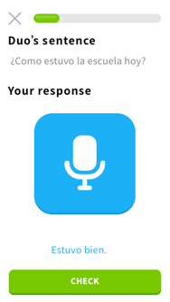
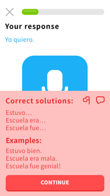
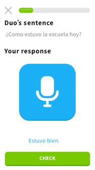
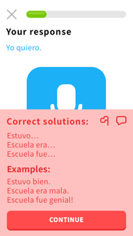

Idea 3
Recommend books, podcasts, TV shows, and music the user should read/listen
to.
Pros
This will guide users to outside sources that are in the user’s level so
it will be more fun because the user will understand it therefore want to
use it.
Cons
How would you do this without having it take over the app (in the design
process) and how will the users get the books or shows etc.?
Idea 4
Give the user a texting buddy. If the user doesn’t want a real person, set
up so user can text with the owl from Duolingo. (Premade discussions—lots
of them). Split the screen so you can see the translation of the texts.
Pros
Users will have someone (or the robot) to text so that they can practice
what they learn. The split screen (for translation) will help users see
where they are messing up in their texts giving them a chance to fix it
right then and learn from their mistakes. Hopefully this could learn to
phone conversations or meetups (as long as it is safe).
Cons
The screen might be too cluttered. What if the user’s texting buddy never
responds?
Idea 5
MORE talking. People say they took years of a language in high school and
college and can’t speak a word of it. Make the users talk talk talk. Have
whole speaking lessons, where all the user does is talk and repeat
sentences. Have a level where users respond to the phrase being said
instead of repeating it.
Pros
They say the best way to learn a language is to speak it. If the app is
making you speak, you have something to speak. If you learn phrases it can
lead to conversations.
Cons
Some people are not comfortable speaking new languages. You can’t always
speak in public.


 


